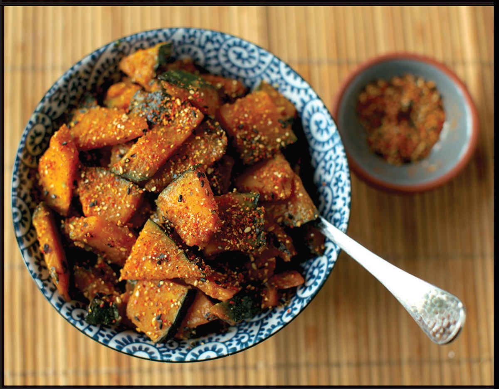
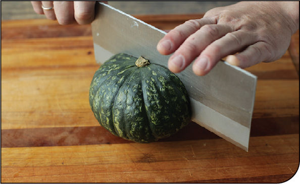
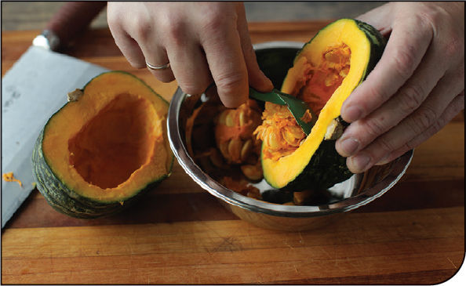
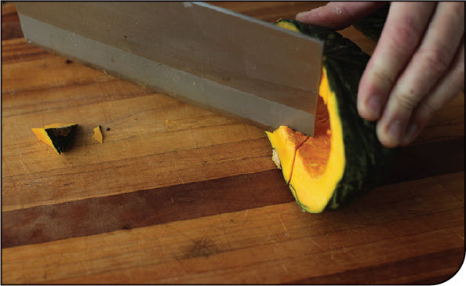
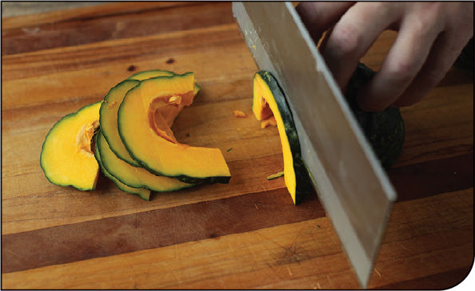
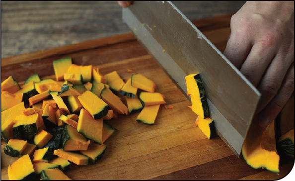

STIR-FRIED KABOCHA SQUASH WITH SAKE AND MISO
|
Yield Serves 4 |
Active Time 25 minutes Total Time 25 minutes |
INGREDIENTS
½ small kabocha squash (about 1 pound/450 g), seeds and guts discarded
1 tablespoon (15 ml) peanut, rice bran, or other neutral oil
½ cup (120 ml) dry sake
3 tablespoons (45 g) white or yellow miso paste
2 teaspoons (10 ml) shoyu or tamari
1 teaspoon (4 g) sugar
Pinch of shichimi togarashi or hot red pepper flakes (optional)

Another vegetable that is delicious with a similar sake-miso coating is pumpkin. Kabocha is a Japanese pumpkin with deep orange flesh, dark green skin, and a flavor and texture that resemble sweet potato when cooked. It’s easily my favorite squash for one simple reason: you don’t need to peel it. Once cooked, the skin becomes as soft and tender as the flesh, making it a snap to prepare. All you’ve got to do is split it in half, scoop out the seeds and guts, trim off the stem, then cut it up for simmering or stir-frying.
This pumpkin is delicious as a side dish, on top of a bowl of rice, at room temperature the next day, or tossed into a salad straight from the fridge.
DIRECTIONS
1Cut the squash into 1-inch wide wedges, then cut crosswise into ¼-inch slices.
2Heat the oil in a wok over medium heat until shimmering. Add the squash and cook, stirring and tossing occasionally, until beginning to soften, about 5 minutes. Increase the heat to high and add ¼ cup (60 ml) of the sake. Stir-fry until the sake is mostly dry, about 2 minutes longer.
3Add the remaining sake and the miso paste, shoyu, and sugar. Cook, tossing and folding gently so as not to break the squash pieces, until the squash is fork-tender and the miso mixture lightly coats each piece, about 4 minutes longer. Transfer to a serving platter, sprinkle with hot pepper flakes (if using), and serve.
How to Prepare Kabocha Squash
Kabocha squash is not as firm as winter squashes like butternut or acorn, but it can, nevertheless, be a little tough to cut without a very hefty knife and a bit of weight. If you find that your squash is too difficult to cut into, try microwaving it on a plate for 2 minutes to lightly soften the outer layers.
KNIFE SKILLS
Step 1 • Cut the Squash in Half

With the stem side facing up, cut the squash in half straight down the middle through the stem.
Step 2 • Remove the Seeds

Use a spoon to remove the seeds and the stringy flesh from inside the squash.
Step 3 • Remove the Stem

Holding one squash half stem side down and using the tip of your knife, cut out the stem.
FOR SIMMERING OR STIR-FRYING
Step 1 • Cut into Wedges

Cut the squash into wedges.
Step 2 • Cut into Pieces

Cut each wedge into pieces (thin slices for stir-fries, thicker chunks for simmering).
FOR TEMPURA

Hold one half of the squash with the cut side down, then cut into 1/6- to ¼-inch slices.